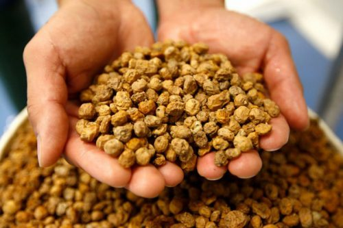

Orxata de xufa
L'orxata és la beguda refrescant i energètica favorita de molts durant l'estiu i és que, a més de les seues excel·lents propietats nutricionals, té un sabor molt característic i deliciós.
L'orxata és la beguda refrescant i energètica favorita de molts durant l'estiu i és que, a més de les seues excel·lents propietats nutricionals, té un sabor molt característic i deliciós.

Dits tots els ingredients que necessitem per a fer una bona orxata de xufa casolana, començarem explicant aquesta recepta.
